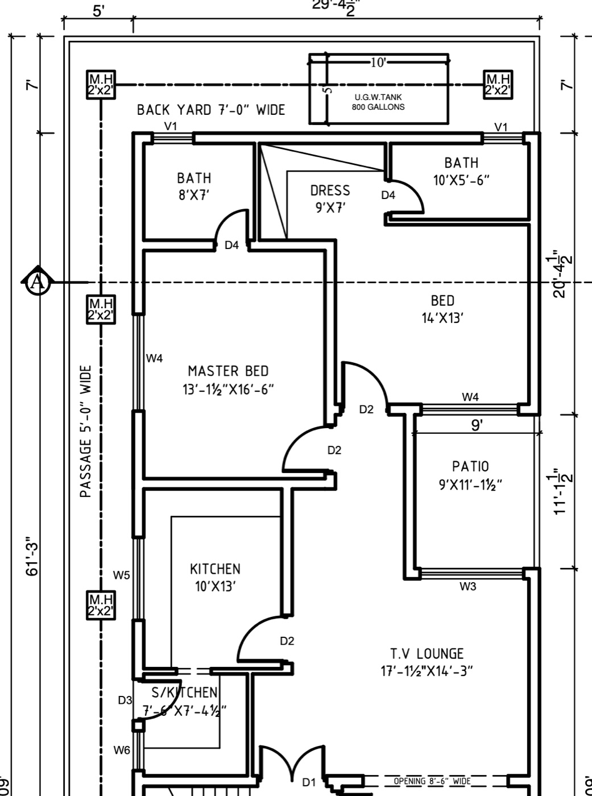

Building the rear part of the ground floor
A plain-language guide to the materials, quantities and steps for the grey structure of the part of plan 104-A-E5 shown in your screenshot. Single storey, no basement, finishing comes later.
What is included
- Rooms (Plan B): Bath 8′×7′, Master Bed 13′-1½″×16′-6″, Patio 9′×11′-1½″ (open to the back yard), Kitchen 10′×13′, S/Kitchen 7′-6″×7′-4½″, TV Lounge 17′-1½″×14′-3″. Skipped for later: Bed 14′×13′, Dress 9′×7′, Bath 10′×5′-6″ (top-right corner) and the back-yard sewer.
- Rooms: Bath 8′×7′, Dress 9′×7′, Bath 10′×5′-6″, Master Bed 13′-1½″×16′-6″, Bed 14′×13′, Patio 9′×11′-1½″, Kitchen 10′×13′, S/Kitchen 7′-6″×7′-4½″, TV Lounge 17′-1½″×14′-3″.
- Covered area is only the area under the roof slab. In Plan B that is ~930 sft: Plan A's 1,280 sft minus the skipped corner (~350 sft). The open patio is not counted.
- Covered area means only the area under the roof slab: about 29′-4½″ × 47′ = 1,380 sft, minus the open patio (~100 sft) = ~1,280 sft. The patio has walls but no roof, so it is not covered area.
- The front edge is the wall line at the bottom of the TV lounge (the 8′-5″ opening and the S/Kitchen bottom wall). No material is counted for the staircase, drawing room, porch/garage, verandah or lawn. The only things that reach the front are the sewer main to the street and the optional septic tank, because the drains need them.
- Boundary walls: only left and front. Left: a single-brick (4½″) wall along the full plot length (~109′) with pillars every 8′. Front: a 9″ wall at the street (~22′ plus 2 gate pillars, leaving ~12′ for the main gate and ramp). No back or right boundary wall, because the neighbours' houses already have walls there.
- Left passage: 3′ paved path and 2′ soil strip instead of a 5′ paved passage. Paving is finishing work, so it is not priced here.
- Not included: the 800-gallon underground water tank shown in the back yard (and the one in the front lawn) is skipped. Water comes from the plastic tank on the roof.
- Main gate: a 12′×7′ steel gate is now included in the cost table.
- Grey services: water pipes in walls, plastic roof tank, sewer lines and manholes, electrical conduits, boxes and COB light cups in the slab.
Wall thickness at a glance
Every wall in this phase, how thick it is above the DPC, and which walls from the drawing are not built.
| Wall | Thickness | Notes |
|---|---|---|
| House walls | ||
| Back wall of the house (with the two V1 windows) | 9″ | Holds the roof |
| Left wall of the house (W4, W5, W6 windows, along the passage) | 9″ | Holds the roof |
| Right wall of the house (next to the neighbour) | 9″ | Holds the roof. Not plastered outside. |
| Centre spine: Master bed | Bed, Kitchen | Lounge, S/Kitchen | Lounge | 9″ | Holds the roof in the middle |
| Wall behind the bedrooms (Bath / Dress / Bath side) | 9″ | Holds the roof and the bath pipes |
| Patio walls (3 sides) | 9″ | The roof ends on them |
| TV lounge front wall (8′-6″ opening) | 9″ | Carries the beam |
| Bath 8×7 | Dress, Dress | Bath 10×5′6″ | 4½″ | Parda wall |
| Master bed | Kitchen, Kitchen | S/Kitchen, small walls at D2 / D3 | 4½″ | Parda wall |
| Roof parapet (back, left, right) | 9″ | Only 2 courses (2 rada, ~7″ high) |
| Boundary walls | ||
| Left boundary (along the passage, full 109′) | 4½″ | Single brick with 13½″ pillars every 8′ |
| Front boundary (at the street, beside the gate) | 9″ | With 2 gate pillars |
| Back boundary wall (top line of the back yard in the drawing) | Not built | The neighbour's house wall is already there |
| Right boundary wall, including the 7′ piece along the back yard | Not built | The neighbour's house wall is already there |
| Below DPC (underground) | ||
| Footings of all walls, including 4½″ ones | 9″ or wider, khingar | Nothing is thinner than 9″ below the DPC |
| Manhole walls | 9″ khingar | |
| Wall | Thickness | Notes |
|---|---|---|
| House walls | ||
| Back wall of the left bath only (one V1 window) | 9″ | Holds the roof |
| New outside walls around the skipped corner: left bath side wall, master bed top and right walls, lobby top wall | 9″ | Become outside walls in Plan B. Leave toothing for later. |
| Left wall of the house (W4, W5, W6 windows, along the passage) | 9″ | Holds the roof |
| Right wall of the house, lounge part only (~15′) | 9″ | Holds the roof. Not plastered outside. |
| Spine: Kitchen | Lounge, S/Kitchen | Lounge | 9″ | Holds the roof in the middle |
| Patio walls: left + bottom only | 9″ | The roof ends on them. The patio's top and right sides stay open to the back yard. |
| TV lounge front wall (8′-6″ opening) | 9″ | Carries the beam |
| Master bed | Kitchen, Kitchen | S/Kitchen, small walls at D2 / D3 | 4½″ | Parda wall |
| Roof parapet (all round the roofed part) | 9″ | Only 2 courses (2 rada, ~7″ high) |
| Boundary walls | ||
| Left boundary (along the passage, full 109′) | 4½″ | Single brick with 13½″ pillars every 8′ |
| Front boundary (at the street, beside the gate) | 9″ | With 2 gate pillars |
| Back boundary wall (top line of the back yard in the drawing) | Not built | The neighbour's house wall is already there |
| Right boundary wall, including the 7′ piece along the back yard | Not built | The neighbour's house wall is already there |
| Below DPC (underground) | ||
| Footings of all walls, including 4½″ ones | 9″ or wider, khingar | Nothing is thinner than 9″ below the DPC |
| Manhole walls | 9″ khingar | |
The part we are building

No underground tank Not built in Plan BBack yard and front yard layout
How the plot will look when this phase is finished. The floor is poured from the house up to the end of the garage. After that comes the lawn, with stepping stones from the gate to the entrance.
Lengths were taken from your drawing: covered width 29′-4½″, floor level +2′-0″ above road (F.L.), wall height 10′, roof slab 5″ RCC 1:2:4, DPC 1½″ 1:2:4, and the 9″×12″ beam with ¾″ bars. The part of the PDF that has the foundation section is cut off, so the foundation below uses the normal Pakistani design for this kind of house. Wall lengths are measured from the plan, so expect ±5–10%.
1. Walls that hold the roof are 9″, outer walls included, which is normal for a single storey. Six inside walls are 4½″ parda walls (see wall types). If you will add an upper floor later, ask the engineer whether the outer walls should be 13½″.
2. The patio is open to the sky, so it has no roof slab. If you cover it, add about 100 sft of slab.
3. The right wall of the house is a full new house wall. If its foundation already exists, take about 2,900 khingar bricks and 16 bags of cement off the foundation numbers.
4. The plastic tank sits on the roof. There is no underground tank in this phase.
Material names (what to ask the shop for)
| Name at site | What it is | Where it goes |
|---|---|---|
| Cement | 50 kg bag, OPC (normal grey cement) | Everywhere: concrete, brick mortar, plaster |
| Rait (Ravi / local) | Fine, soft sand | Bed under foundation, brick mortar (masala) |
| Rait (Chenab / Lawrencepur) | Coarse, clean, sharp sand | Concrete (PCC and RCC), DPC, plaster |
| Bajri / Bajar | River gravel, ¾″–1½″, cheaper | Foundation PCC 1:4:8 and floor base PCC |
| Crush | Machine-crushed stone ½″–¾″ (Margalla/Sargodha) | RCC: roof slab, beams, lintels |
| Chips (barik crush) | Small crush ¼″–⅜″ | DPC concrete layer |
| Khingar eent | Over-burnt, very hard, dark bricks. Often bent, but cheaper and they do not soak water. | Below DPC: foundation steps, plinth, manholes, septic, boundary footing |
| Awwal eent (first class) | 9″×4½″×3″ straight, even, red bricks | Above DPC: all walls, parapet, boundary above ground |
| Sarya | Steel bars, Grade 60. Size in sutar, 1 sutar = ⅛″ | Slab, beams, lintels |
| Tar (binding wire) | Soft black wire | Tying sarya together |
| Bitumen (lukk) | Black tar, used hot | On top of DPC and on the roof |
| Ghassu | Cheap fine sandy fill. Packs hard when flooded with water and does not shrink. | Filling inside the rooms (bharai), up to the floor base |
| Mitti | Ordinary earth, the soil you dig out | Backfill outside and around footings, roof mud. Nothing to buy. |
Sarya sizes
| Sutar | Inch | mm | Weight of one 40 ft bar |
|---|---|---|---|
| 2 sutar | ¼″ | 6 | ~3.0 kg |
| 3 sutar | ⅜″ | 10 | ~6.8 kg |
| 4 sutar | ½″ | 12 | ~12.1 kg |
| 5 sutar | ⅝″ | 16 | ~19.0 kg |
| 6 sutar | ¾″ | 20 | ~27.3 kg |
Mix ratios in simple words
1:4:8 means 1 tasla cement, 4 tasla rait, 8 tasla bajri. 1:2:4 means 1 cement, 2 rait, 4 crush. 1:6 mortar means 1 cement and 6 rait. Use the same tasla for every material.
Full shopping list
This is everything for the grey structure of this part, with breakage and wastage already added. Buy in 2–3 rounds, not all at once (see schedule).
| Item | Quantity | Notes |
|---|---|---|
| Basic materials | ||
| Khingar bricks | 24,800 | Everything below DPC, incl. manholes, septic, boundary footing. 8% breakage added. |
| First-class bricks | 34,300 | 9″ and 4½″ walls above DPC, 2-course parapet, boundary above ground, tank stand. 5% breakage added. |
| Cement | 440 bags | About 125 bags are needed in the foundation stage |
| Rait, Ravi / local | 1,445 cft | Brick mortar plus bed under foundation |
| Rait, Chenab | 1,005 cft | Concrete, DPC, plaster |
| Bajri | 755 cft | PCC under foundation and floors |
| Crush ½″–¾″ | 525 cft | Slab, beams, lintels |
| Chips ¼″–⅜″ | 35 cft | DPC |
| Sarya 3 sutar (⅜″) | 1,070 kg | ~157 bars of 40 ft |
| Sarya 6 sutar (¾″) | 260 kg | ~10 bars. For the beam in the drawing. |
| Sarya 2 sutar (¼″) | 87 kg | Lintel rings + bars in parda walls |
| Sarya 4 sutar (½″) | 15 kg | Fan hooks and spare |
| Binding wire | 15 kg | |
| Ghassu | ~2,100 cft | Filling inside the rooms, about 19″ deep, watered and rammed |
| Mitti | 0 to buy | Use the ~3,300 cft of dug soil for backfill outside the footings and for the roof mud |
| Waterproofing | ||
| Bitumen | ~250 kg | 50 kg on DPC, 200 kg on roof |
| Waterproofing compound | ~15 kg / litre | Mixed into the DPC and slab top |
| Polythene sheet (thick) | ~1,400 sft | Roof, under the mud |
| Anti-termite chemical | 1 set | Sprayed in trenches and under floors |
| Services (details in their own sections) | ||
| Water: PPR pipes, fittings, valves, 500 gal plastic tank | See list | Water section |
| Sewer: PVC 6″/4″/3″/2″ pipes, traps, manhole covers | See list | Sewer section |
| Main gate 12′×7′ (MS steel) | 1 | Fabricated and fixed at the front boundary |
| Electric: conduit, 40 COB cups, boxes, DB box | See list | Electrical section |
| Item | Quantity | Notes |
|---|---|---|
| Basic materials | ||
| Khingar bricks | 20,300 | Everything below DPC, incl. manholes, septic, boundary footing. 8% breakage added. |
| First-class bricks | 27,400 | 9″ and 4½″ walls above DPC, 2-course parapet, boundary above ground, tank stand. 5% breakage added. |
| Cement | 345 bags | About 104 bags are needed in the foundation stage |
| Rait, Ravi / local | 1,175 cft | Brick mortar plus bed under foundation |
| Rait, Chenab | 790 cft | Concrete, DPC, plaster |
| Bajri | 610 cft | PCC under foundation and floors |
| Crush ½″–¾″ | 390 cft | Slab, beams, lintels |
| Chips ¼″–⅜″ | 27 cft | DPC |
| Sarya 3 sutar (⅜″) | 790 kg | ~116 bars of 40 ft |
| Sarya 6 sutar (¾″) | 260 kg | ~10 bars. For the beam in the drawing. |
| Sarya 2 sutar (¼″) | 70 kg | Lintel rings + bars in parda walls |
| Sarya 4 sutar (½″) | 12 kg | Fan hooks and spare |
| Binding wire | 12 kg | |
| Ghassu | ~1,550 cft | Filling inside the rooms, about 19″ deep, watered and rammed |
| Mitti | 0 to buy | Use the ~2,715 cft of dug soil for backfill outside the footings and for the roof mud |
| Waterproofing | ||
| Bitumen | ~185 kg | 40 kg on DPC, 145 kg on roof |
| Waterproofing compound | ~12 kg / litre | Mixed into the DPC and slab top |
| Polythene sheet (thick) | ~1,010 sft | Roof, under the mud |
| Anti-termite chemical | 1 set | Sprayed in trenches and under floors |
| Services (details in their own sections) | ||
| Water: PPR pipes, fittings, valves, 500 gal plastic tank | See list | Water section |
| Sewer: PVC 6″/4″/3″/2″ pipes, traps, manhole covers | See list | Sewer section |
| Main gate 12′×7′ (MS steel) | 1 | Fabricated and fixed at the front boundary |
| Electric: conduit, 30 COB cups, boxes, DB box | See list | Electrical section |
Foundation
The foundation is a trench filled in layers, from bottom to top: sand bed, then plain concrete, then brick steps that get narrower as they go up, up to the plinth. At plinth top comes the DPC. The drawing gives floor level as 2′ above road level, so the plinth sits 2′ above the ground.
Which walls are 9″ and which are 4½″
The roof slab rests on the 9″ structural walls. They are laid out so that no slab span is more than about 14′–15′. The 4½″ parda walls only divide rooms and carry no slab or beam, so they can be thin.
| Wall | Length | Type | Why |
|---|---|---|---|
| 9″ structural (~248 rft) | |||
| Outer walls: back, left, right | ~120 rft | 9″ | Carry the slab edges and parapet |
| Centre spine: Master bed | Bed, continuing as Kitchen | Lounge and S/Kitchen | Lounge | ~40 rft | 9″ | Splits the 29′ width into two spans of ~13′ and ~15′ |
| Long line behind the bedrooms (Bath / Dress / Bath side) | ~28 rft | 9″ | Supports slab of the bath strip and the bedrooms. It also holds the bath pipes. |
| Patio walls (top, left, bottom) | ~31 rft | 9″ | The patio is open, so the slab edge stops on these walls |
| Lounge front wall (8′-5″ opening line) | ~29 rft | 9″ | Closes the house and carries the beam over the 8′-5″ opening |
| 4½″ parda walls (~52 rft) | |||
| Bath 8′×7′ | Dress | ~7.5 rft | 4½″ | Divider inside the 7′ strip |
| Dress | Bath 10′×5′-6″ | ~7.5 rft | 4½″ | Divider inside the 7′ strip |
| Master bed | Kitchen | ~13.5 rft | 4½″ | Slab spans across it, from the left wall to the spine |
| Kitchen | S/Kitchen | ~10 rft | 4½″ | Divider |
| S/Kitchen side wall at door D3 | ~7.5 rft | 4½″ | Divider |
| Small return walls at the D2 doors (lobby) | ~6 rft | 4½″ | Door side pieces |
| Wall | Length | Type | Why |
|---|---|---|---|
| 9″ structural (~188 rft) | |||
| Outer walls: left (47′), right lounge part (~15′), back of left bath (8½′) | ~70 rft | 9″ | Carry the slab edges and parapet |
| Master bed right wall (now an outside wall), continuing as Kitchen | Lounge and S/Kitchen | Lounge | ~40 rft | 9″ | Splits the 29′ width into two spans of ~13′ and ~15′ |
| New outside walls: left bath side (~8′), master bed top (~6′), lobby top (~6′) | ~20 rft | 9″ | Close the house where the skipped corner was |
| Patio walls: left + bottom only (top and right open to the back yard) | ~21 rft | 9″ | The patio is open, so the slab edge stops on these walls |
| Lounge front wall (8′-5″ opening line) | ~29 rft | 9″ | Closes the house and carries the beam over the 8′-5″ opening |
| 4½″ parda walls (~37 rft) | |||
| Master bed | Kitchen | ~13.5 rft | 4½″ | Slab spans across it, from the left wall to the spine |
| Kitchen | S/Kitchen | ~10 rft | 4½″ | Divider |
| S/Kitchen side wall at door D3 | ~7.5 rft | 4½″ | Divider |
| Small return walls at the D2 doors (lobby) | ~6 rft | 4½″ | Door side pieces |
• Below DPC, every parda wall still sits on a 9″ khingar footing, so the floor fill does not push it over. It only becomes 4½″ above the DPC.
• Build parda walls after the slab props are removed (step 21), so the slab never rests on them. Leave a ½″ gap at the top and pack it tight with mortar.
• Every 5th course, lay 2 bars of 2 sutar (¼″) in the mortar, bent 9″ into the 9″ walls at both ends. This stops cracks.
• Do not cut deep pipe grooves in a 4½″ wall. Keep plumbing on the 9″ walls. Thin electrical conduit is fine.
Foundation sizes
| Wall | Length | Trench (width × depth) | Layers bottom to top |
|---|---|---|---|
| 9″ structural walls (outer ~120 rft + inner ~128 rft) | ~248 rft | 2′-6″ × 3′-6″ | 3″ rait, 6″ PCC, steps 22½″/18″/13½″, then 9″ wall to DPC |
| 4½″ parda walls | ~52 rft | 2′-0″ × 2′-6″ | 3″ rait, 6″ PCC, step 13½″, then 9″ khingar to DPC, then 4½″ above DPC |
| Left boundary, single brick 4½″ | ~109 rft | 1′-6″ × 2′-0″ | 3″ rait, 6″ PCC, steps 13½″/9″, then 4½″ wall, 7′ high. 13½″×13½″ pillar every 8′ (15 pillars). |
| Front boundary 9″ | ~22 rft | 2′-0″ × 2′-6″ | 3″ rait, 6″ PCC, steps 18″/13½″, then 9″ wall, 7′ high, plus 2 gate pillars |
| Wall | Length | Trench (width × depth) | Layers bottom to top |
|---|---|---|---|
| 9″ structural walls | ~188 rft | 2′-6″ × 3′-6″ | 3″ rait, 6″ PCC, steps 22½″/18″/13½″, then 9″ wall to DPC |
| 4½″ parda walls | ~37 rft | 2′-0″ × 2′-6″ | 3″ rait, 6″ PCC, step 13½″, then 9″ khingar to DPC, then 4½″ above DPC |
| Left boundary, single brick 4½″ | ~109 rft | 1′-6″ × 2′-0″ | 3″ rait, 6″ PCC, steps 13½″/9″, then 4½″ wall, 7′ high. 13½″×13½″ pillar every 8′ (15 pillars). |
| Front boundary 9″ | ~22 rft | 2′-0″ × 2′-6″ | 3″ rait, 6″ PCC, steps 18″/13½″, then 9″ wall, 7′ high, plus 2 gate pillars |
At each of these 6 points, carry the foundation (PCC + khingar steps + DPC) 2′ further than needed, and leave toothing (every second course sticking out) in the walls above:
1. Back wall line, past the left bath's corner
2. Left bath's side wall, at the back
3. Master bed's top wall, where the future dress wall will join
4. Master bed's right wall, toward the future bedroom
5. Lobby top wall, at its right end
6. Right outer wall, above the TV lounge, toward the patio
The new rooms will lock into these instead of cracking at the joint, and nobody has to dig next to a finished foundation later. Cost: ~744 khingar bricks and ~4 bags of cement, about Rs 25k.
Foundation materials (up to DPC)
You asked how much cement and bajri goes into the foundation alone. Here it is, house plus boundary walls, from digging up to DPC:
| Work | Volume | Cement | Rait | Bajri / chips | Bricks |
|---|---|---|---|---|---|
| Digging (khudai) | ~3,300 cft | – | – | – | – |
| Rait bed 3″ | 235 cft | – | 235 cft Ravi | – | – |
| PCC 6″ (1:4:8) | 477 cft | 45 bags | 226 cft Chenab | 451 cft bajri | – |
| Khingar footing + plinth (mortar 1:5) | 1,485 cft | 74 bags | 461 cft Ravi | – | 20,050 khingar |
| DPC 1½″ (1:2:4) | 35 cft | 6 bags | 16 cft Chenab | 31 cft chips | – |
| Foundation total | ~125 bags | ~940 cft | ~482 cft | ~20,050 khingar |
| Work | Volume | Cement | Rait | Bajri / chips | Bricks |
|---|---|---|---|---|---|
| Digging (khudai) | ~2,715 cft | – | – | – | – |
| Rait bed 3″ | 198 cft | – | 198 cft Ravi | – | – |
| PCC 6″ (1:4:8) | 403 cft | 38 bags | 191 cft Chenab | 383 cft bajri | – |
| Khingar footing + plinth (mortar 1:5) | 1,223 cft | 61 bags | 380 cft Ravi | – | 16,514 khingar |
| DPC 1½″ (1:2:4) | 28 cft | 5 bags | 12 cft Chenab | 25 cft chips | – |
| Foundation total | ~104 bags | ~781 cft | ~408 cft | ~16,514 khingar |
You will dig about 3,300 cft of mitti. Keep it on the plot. About 1,700 cft goes back into the trenches around the footings, up to ground level. About 425 cft goes on the roof as mud. Spread the rest in the back yard and the 2′ soil strip.
Inside the rooms, from ground level up to the floor base, fill with ghassu: about 19″ deep over ~1,110 sft, so about 2,100 cft loose. Lay it in 6″ layers, flood each layer with water and ram it. Ghassu is sandy, so the floor PCC goes straight on top and the 3″ rait layer is not needed.
You will dig about 2,715 cft of mitti. Keep it on the plot. About 1,300 cft goes back into the trenches around the footings, up to ground level. About 305 cft goes on the roof as mud. Spread the rest in the back yard, the empty corner and the 2′ soil strip.
Inside the rooms, from ground level up to the floor base, fill with ghassu: about 19″ deep over ~810 sft, so about 1,550 cft loose. Lay it in 6″ layers, flood each layer with water and ram it. The floor PCC goes straight on top.
Brick estimate
There are two kinds of brick. Khingar goes everywhere below the DPC, because it is hard, cheap and does not soak up ground water. First-class (awwal) goes everywhere above the DPC, because it is straight and gives clean walls for plaster. Only the rooms under the roof are counted. Nothing is counted for the stair, drawing room or porch/garage.
Khingar bricks (below DPC)
| Part | How it was worked out | Bricks |
|---|---|---|
| Foundation of 9″ structural walls | ~248 rft: steps plus 2′ plinth | 15,370 |
| Foundation of 4½″ parda walls | ~52 rft: one step + 9″ khingar up to DPC | 2,050 |
| Boundary wall footings | Left 4½″ (~109 rft, 15 pillars) + front 9″ (~22 rft), up to ground level | 2,630 |
| Manholes (4 nos, 2′×2′) | ~330 bricks each | 1,320 |
| Septic tank (8′-3″ × 5′-6″, as drawn) optional | Only if the society or street sewer needs it | 1,600 |
| Khingar total | 22,970 | |
| Buy (8% breakage, khingar is uneven) | ~24,800 |
| Part | How it was worked out | Bricks |
|---|---|---|
| Foundation of 9″ structural walls | ~188 rft: steps plus 2′ plinth | 11,690 |
| Foundation stubs for future rooms | 6 joints × 2′ long, 9″ footing up to DPC, toothing at the ends | 744 |
| Foundation of 4½″ parda walls | ~37 rft: one step + 9″ khingar up to DPC | 1,450 |
| Boundary wall footings | Left 4½″ (~109 rft, 15 pillars) + front 9″ (~22 rft), up to ground level | 2,630 |
| Manholes (2 nos, 2′×2′) | ~330 bricks each | 660 |
| Septic tank (8′-3″ × 5′-6″, as drawn) optional | Only if the society or street sewer needs it | 1,600 |
| Khingar total | 18,774 | |
| Buy (8% breakage, khingar is uneven) | ~20,300 |
Without the septic tank, buy about 23,100 khingar bricks.
No foundation, wall, slab or brick is counted for the staircase, stair bath (mumtee bath), drawing room, porch/garage or verandah. The bottom wall of the TV lounge is counted because it closes the lounge, and it will be shared with those rooms later.
First-class bricks (above DPC)
| Part | How it was worked out | Bricks |
|---|---|---|
| 9″ structural walls, DPC to roof (10′) | ~248 rft, door and window openings removed | 22,265 |
| 4½″ parda walls, DPC to roof (10′) | ~52 rft, door openings removed | 2,430 |
| Roof parapet 9″, 2 courses (2 rada) | Back, left and right sides of the roof (~123 rft) | 680 |
| Left boundary above ground | Single brick 4½″, 7′ high, ~109 rft, 15 pillars 13½″×13½″ | 5,060 |
| Front boundary above ground | 9″, 7′ high, ~22 rft, 2 gate pillars | 1,920 |
| Roof tank platform | About 3′ high, for water pressure | 300 |
| First-class total | 32,655 | |
| Buy (5% breakage) | ~34,300 |
| Part | How it was worked out | Bricks |
|---|---|---|
| 9″ structural walls, DPC to roof (10′) | ~188 rft, door and window openings removed | 16,535 |
| 4½″ parda walls, DPC to roof (10′) | ~37 rft, door openings removed | 1,730 |
| Roof parapet 9″, 2 courses (2 rada) | All round the roofed part (~102 rft) | 560 |
| Left boundary above ground | Single brick 4½″, 7′ high, ~109 rft, 15 pillars 13½″×13½″ | 5,060 |
| Front boundary above ground | 9″, 7′ high, ~22 rft, 2 gate pillars | 1,920 |
| Roof tank platform | About 3′ high, for water pressure | 300 |
| First-class total | 26,105 | |
| Buy (5% breakage) | ~27,400 |
Bricks went from ~75,700 to ~59,100 (about 16,600 fewer), and cement went from ~510 to ~440 bags. The changes were:
• Outer house walls made 9″ instead of 13½″, with a smaller foundation.
• Six inside walls (~52 rft) made 4½″ parda walls, with a lighter footing.
• Back and right boundary walls removed.
• Left boundary made single brick (4½″) with pillars.
• Outer face of the left boundary left unplastered (pointing only).
• Roof parapet cut to 2 courses (2 rada) instead of 3′ high, saving about 3,000 bricks. It holds the roof mud and tiles in place. It is not a safety railing, so take care on the roof.
Plan B uses about 47,700 bricks (20,300 khingar + 27,400 first class) instead of ~59,100, and about 345 bags of cement instead of ~450. The savings from 9″ outer walls, parda walls and the single-brick left boundary all still apply.
Simple rule used: 1 cubic foot of brick wall takes about 13½ bricks with mortar. 1,000 first-class bricks take about 2.8 bags of cement and 21 cft of rait for 1:6 mortar. 1,000 khingar bricks in 1:5 mortar take about 3.7 bags and 23 cft of rait. That is about 12% more than first class, because the bent bricks leave bigger joints.
Pick the straightest khingar bricks for the corners and the top course under the DPC. Put the badly bent ones in the middle of the wide footing steps. Fill all gaps fully with mortar. Khingar does not need soaking as long as first-class bricks do. A quick dip is enough.
Soak bricks in water for a few hours before laying. Keep the mortar joint about ⅜″. Lay no more than about 4′ of height per day. Water the wall (tarai) twice a day for 7 days.
Sarya (steel) estimate
Since this is a single-storey house with load-bearing walls there are no columns. Steel goes into the roof slab, the lintels over doors and windows, and the beam shown in the drawing.
| Size | Where it goes | Weight | 40 ft bars |
|---|---|---|---|
| 3 sutar (⅜″) | Roof slab: bottom main bars @ 6″ c/c (every second bar cranked near the walls), cross bars @ 9″ c/c, extra top bars 4′ long @ 9″ over every inner wall. Lintel bars (4 per lintel). Beam rings @ 9″. | 1,070 kg | ~157 |
| 6 sutar (¾″) | 9″×12″ beam over the 8′-5″ lounge opening and other wide openings, about 40 rft. The drawing shows 3 bars at top and 4 at bottom. | 260 kg | ~10 |
| 2 sutar (¼″) | Lintel rings @ 6″ c/c (32 kg) + 2 bars every 5th course in parda walls (55 kg) | 87 kg | ~29 |
| 4 sutar (½″) | Fan hooks in slab (4 nos), spare | 15 kg | ~2 |
| Binding wire | About 1% of steel | 15 kg | – |
| Total | ~1,445 kg |
| Size | Where it goes | Weight | 40 ft bars |
|---|---|---|---|
| 3 sutar (⅜″) | Roof slab (~920 sft): bottom main bars @ 6″ c/c (every second bar cranked near the walls), cross bars @ 9″ c/c, extra top bars 4′ long @ 9″ over every inner wall. Lintel bars. Beam rings @ 9″. | 790 kg | ~116 |
| 6 sutar (¾″) | 9″×12″ beam over the 8′-6″ lounge opening and other wide openings, about 40 rft. 3 bars top, 4 bottom. | 260 kg | ~10 |
| 2 sutar (¼″) | Lintel rings @ 6″ c/c + 2 bars every 5th course in parda walls | 70 kg | ~23 |
| 4 sutar (½″) | Fan hooks in slab (3 nos), spare | 12 kg | ~1 |
| Binding wire | About 1% of steel | 12 kg | – |
| Total | ~1,145 kg |
A 5″ slab with 3 sutar @ 6″ is normal for rooms up to about 14′ wide. The lounge is 17′ wide, so the engineer may ask for 4 sutar bars there, a 6″ slab, or a beam in the middle. If you plan an upper floor later, tell the engineer now: the slab, beams and foundation may change.
Lintels, beams & roof slab
| Item | Size | Concrete | Cement | Chenab rait | Crush |
|---|---|---|---|---|---|
| Roof slab (patio left open) | ~1,270 sft × 5″, 1:2:4 | 530 cft | 93 bags | 233 cft | 466 cft |
| Beams | 9″×12″, ~40 rft | 30 cft | 5 bags | 13 cft | 26 cft |
| Lintels over doors/windows | 6″ thick, 9″ wide, 9″ extra each side, ~90 rft | 35 cft | 6 bags | 15 cft | 31 cft |
| Total RCC | 595 cft | 104 bags | 261 cft | 523 cft |
| Item | Size | Concrete | Cement | Chenab rait | Crush |
|---|---|---|---|---|---|
| Roof slab (patio and skipped corner left open) | ~920 sft × 5″, 1:2:4 | 382 cft | 67 bags | 168 cft | 336 cft |
| Beams | 9″×12″, ~40 rft | 30 cft | 5 bags | 13 cft | 26 cft |
| Lintels over doors/windows | 6″ thick, 9″ wide, 9″ extra each side, ~70 rft | 27 cft | 5 bags | 12 cft | 24 cft |
| Total RCC | 439 cft | 77 bags | 193 cft | 386 cft |
Rule used: 100 cft of 1:2:4 concrete needs about 17½ bags of cement, 44 cft of rait and 88 cft of crush. 100 cft of 1:4:8 needs about 9½ bags, 47 cft of rait and 95 cft of bajri.
Pour the whole slab in one day without stopping. Hire a mixer and a vibrator. Put concrete spacer blocks (gutka) under the steel so it has 1″ of cover. Keep water standing on the slab in small mud ponds for 14 days. Leave the props in for 21 days.
DPC & waterproofing
The DPC (damp proof course) is a thin concrete band on top of the plinth. It stops ground water climbing up into the walls. Done well, it saves you from salty, peeling walls later.
- Level the top of the plinth brickwork everywhere at the same height (F.L. +2′-0″).
- Fix wooden side planks on both sides of the wall so the DPC has straight edges.
- Pour 1½″ of chips concrete: cement 1, Chenab rait 2, chips 4. Add waterproofing compound to the water as the packet says (about 1 kg per bag of cement). Smooth the top.
- Cure for 3–4 days, keeping it wet with gunny bags.
- When dry, apply 2 coats of hot bitumen on top, and sprinkle sand on the second coat so the next mortar grips. Run the bitumen a little down the sides.
- Leave no gaps. DPC must run continuously under every wall, door openings included. Door openings get DPC too.
| DPC item | Quantity |
|---|---|
| DPC area (house + boundary) | ~282 sft |
| Cement | 6 bags |
| Chips | 31 cft |
| Chenab rait | 16 cft |
| Bitumen (2 coats) | ~45 kg |
| Waterproofing compound | ~8 kg |
| DPC item | Quantity |
|---|---|
| DPC area (house + boundary) | ~242 sft |
| Cement | 5 bags |
| Chips | 27 cft |
| Chenab rait | 13 cft |
| Bitumen (2 coats) | ~40 kg |
| Waterproofing compound | ~7 kg |
Also: spray anti-termite chemical in the trench bottom before the rait, and again on the filled earth before the floor base.
Plaster, floor base & roof
| Work | Area and mix | Cement | Rait |
|---|---|---|---|
| Inside wall plaster ½″ | ~4,150 sft, 1:4 | 36 bags | 178 cft |
| Ceiling plaster ⅜″ | ~1,110 sft, 1:3 | 9 bags | 34 cft |
| Outside plaster ¾″ | ~1,455 sft, 1:4 (back, left, low parapet, front edge; not the right side wall against the neighbour) | 19 bags | 95 cft |
| Boundary wall plaster ½″ | ~1,070 sft, 1:5. Left wall inside face only (outside face pointing only), front wall both faces. | 8 bags | 48 cft |
| Floor base inside rooms | ~1,110 sft: 3″ PCC 1:4:8 straight on the rammed ghassu | 26 bags | 132 Chenab, 263 cft bajri |
| Work | Area and mix | Cement | Rait |
|---|---|---|---|
| Inside wall plaster ½″ | ~2,980 sft, 1:4 | 26 bags | 128 cft |
| Ceiling plaster ⅜″ | ~810 sft, 1:3 | 7 bags | 25 cft |
| Outside plaster ¾″ | ~1,255 sft, 1:4 (left, back of bath, new walls around the skipped corner, patio, low parapet, front edge) | 16 bags | 81 cft |
| Boundary wall plaster ½″ | ~1,070 sft, 1:5. Left wall inside face only, front wall both faces. | 8 bags | 48 cft |
| Floor base inside rooms | ~810 sft: 3″ PCC 1:4:8 straight on the rammed ghassu | 19 bags | 96 Chenab, 192 cft bajri |
Roof waterproofing (end of grey stage)
Without this the roof will leak in the first monsoon. On top of the cured slab: 2 coats of hot bitumen (~200 kg), then polythene sheet (~1,400 sft), then 4″ of rammed mitti (~425 cft, from your own dug soil), then brick roof tiles (~4,700) laid in mud and pointed with cement (~10 bags). Give it a slope toward the 4 rain outlets.
Water pipes & plastic tank
Water flows from a plastic tank on the roof, by gravity, to 2 baths, the kitchen, S/kitchen, a washing machine point and 2 outdoor taps. A geyser line gives hot water to the baths and kitchen. Use PPR pipes (green or white, heat-welded joints) inside walls.
Water points
| Room | Cold points | Hot points | Stop valves |
|---|---|---|---|
| Bath 8′×7′ | Commode, muslim shower, basin, shower mixer (4) | Basin, shower mixer (2) | 2 (hot + cold) |
| Bath 10′×5′-6″ | Commode, muslim shower, basin, shower mixer (4) | Basin, shower mixer (2) | 2 |
| Kitchen | Sink (1) | Sink (1) | 1 |
| S/Kitchen | Sink (1), washing machine (1) | Sink (1) | – |
| Back yard + patio | Wash taps (2) | – | – |
| Geyser | Inlet (1) | Outlet (1) | 1 |
| Total | 15 | 7 | 6 + 1 main |
| Room | Cold points | Hot points | Stop valves |
|---|---|---|---|
| Bath 8′×7′ | Commode, muslim shower, basin, shower mixer (4) | Basin, shower mixer (2) | 2 (hot + cold) |
| Kitchen | Sink (1) | Sink (1) | 1 |
| S/Kitchen | Sink (1), washing machine (1) | Sink (1) | – |
| Back yard + patio | Wash taps (2) | – | – |
| Geyser | Inlet (1) | Outlet (1) | 1 |
| Total | 11 | 5 | 4 + 1 main |
Water supply shopping list
| Item | Quantity | Notes |
|---|---|---|
| Plastic water tank, 500 gallon | 1 | Enough for 5–6 people. Comes with lid. Put on brick platform on roof over the bath walls. |
| PPR pipe 32 mm (1″) | 40 ft (~4 lengths) | Tank outlet down to the main line |
| PPR pipe 25 mm (¾″) | 200 ft (~16 lengths) | Branch lines, hot main, and motor line to the tank |
| PPR pipe 20 mm (½″) | 220 ft (~17 lengths) | Short lines to each point |
| PPR elbows 20 / 25 / 32 mm | 40 / 25 / 6 | |
| PPR tees 20 / 25 / 32 mm | 15 / 12 / 3 | |
| Reducer tees / sockets (25×20, 32×25) | 10 / 4 | |
| Female threaded elbow 20 mm × ½″ | 24 | The wall points where taps fit later |
| Concealed stop valve 20/25 mm | 7 | |
| Ball valve 32 mm + 2 unions | 1 set | At the tank outlet |
| Tank connectors (inlet, outlet, overflow) | 3 | |
| End plugs ½″ | 24 | Close points for the pressure test |
| Pipe clamps | 60 |
| Item | Quantity | Notes |
|---|---|---|
| Plastic water tank, 500 gallon | 1 | Enough for 5–6 people. Comes with lid. Put on brick platform on roof over the bath walls. |
| PPR pipe 32 mm (1″) | 40 ft (~4 lengths) | Tank outlet down to the main line |
| PPR pipe 25 mm (¾″) | 160 ft (~13 lengths) | Branch lines, hot main, and motor line to the tank |
| PPR pipe 20 mm (½″) | 160 ft (~13 lengths) | Short lines to each point |
| PPR elbows 20 / 25 / 32 mm | 30 / 20 / 6 | |
| PPR tees 20 / 25 / 32 mm | 11 / 9 / 3 | |
| Reducer tees / sockets (25×20, 32×25) | 8 / 4 | |
| Female threaded elbow 20 mm × ½″ | 18 | The wall points where taps fit later |
| Concealed stop valve 20/25 mm | 5 | |
| Ball valve 32 mm + 2 unions | 1 set | At the tank outlet |
| Tank connectors (inlet, outlet, overflow) | 3 | |
| End plugs ½″ | 18 | Close points for the pressure test |
| Pipe clamps | 45 |
Close all points with plugs and pressure-test the whole system for 24 hours. A leak found after tiles costs 10 times more to fix.
Sewer & drains
Your drawing sends all waste to manholes in the 5′ passage on the left, then to the main sewer at the front gate. Even though only the rear part is being built now, the 6″ main line must reach the street, so it is laid the full length of the passage.
Manholes (2′×2′ inside)
| No. | Where | Collects |
|---|---|---|
| MH-1 | Back yard, left corner | Bath 8′×7′, back yard drain, rain pipes at back |
| MH-2 | Back yard, right corner | Bath 10′×5′-6″ |
| MH-3 | Passage, beside master bed (line A) | Patio floor drain, left rain pipe |
| MH-4 | Passage, beside kitchen | Kitchen and S/kitchen sinks, washing machine |
| No. | Where | Collects |
|---|---|---|
| MH-1 | Passage, beside the left bath (8′×7′). The sewer starts here. | Left bath (commode, basin, floor trap), back roof rain pipes |
| MH-2 | Passage, beside kitchen | Kitchen and S/kitchen sinks, washing machine, patio drain, left rain pipe |
Drainage shopping list
| Item | Quantity | Use |
|---|---|---|
| PVC pipe 6″ | ~130 ft | Main line: MH-2 → MH-1 → passage → street sewer |
| PVC pipe 4″ | ~30 ft | Commodes to manholes |
| PVC pipe 3″ | ~120 ft | Floor traps, sinks, 4 rain pipes from roof (~12 ft each) |
| PVC pipe 2″ | ~60 ft | Basins, washing machine, 2 vent pipes up past roof |
| 4″ bends / 4″ Y | 4 / 2 | |
| 3″ bends / 3″ tees or Y | 12 / 6 | |
| 2″ bends / 2″ tees | 12 / 4 | |
| Floor trap 3″ (with grating) | 4 | 2 baths, patio, back yard |
| Gully trap | 2 | Kitchen, S/kitchen |
| Roof rain outlet with grating | 4 | Fix before the slab is poured |
| Vent cowl 2″ | 2 | Top of vent pipes |
| Manhole covers 2′×2′ (RCC or iron) | 4 | |
| PVC solvent cement | 2 tins |
| Item | Quantity | Use |
|---|---|---|
| PVC pipe 6″ | ~100 ft | Main line: MH-1 (beside left bath) → MH-2 → street sewer. No pipe in the back yard. |
| PVC pipe 4″ | ~15 ft | Commodes to manholes |
| PVC pipe 3″ | ~95 ft | Floor traps, sinks, 4 rain pipes from roof (~12 ft each) |
| PVC pipe 2″ | ~45 ft | Basin, washing machine, 1 vent pipe up past roof |
| 4″ bends / 4″ Y | 2 / 1 | |
| 3″ bends / 3″ tees or Y | 10 / 5 | |
| 2″ bends / 2″ tees | 10 / 3 | |
| Floor trap 3″ (with grating) | 3 | Bath, patio, back yard |
| Gully trap | 2 | Kitchen, S/kitchen |
| Roof rain outlet with grating | 4 | Fix before the slab is poured |
| Vent cowl 2″ | 1 | Top of vent pipes |
| Manhole covers 2′×2′ (RCC or iron) | 2 | |
| PVC solvent cement | 2 tins |
Lay the 6″ main and the manholes under the 3′ paved path, not under the soil strip. Then the manhole covers stay on the path where you can reach them, and plant roots in the soil strip cannot crack the pipe.
Every drain pipe needs a downhill slope: about ¼″ per foot for 3″ and 4″ pipes, and ⅛″ per foot for the 6″ main. Lay drain pipes that run under rooms before the earth filling and floor base.
Electrical conduit, boxes & COB cups
At grey stage only the empty pipes (conduit), boxes and light cups go in. Wires, switches, COB lights and fans come with finishing. There are no wall lights. Fans have remote control, so there are no dimmers. Each room gets 2 low sockets and 1–2 switch boards.
Light and box plan per room
COB cups (plastic cups with langer) go into the slab shuttering before the roof is poured, spaced about 4′–5′ apart and about 2′–3′ from the walls.
| Room | COB cups | Fan box | Switch boards | Low sockets | AC box | Other |
|---|---|---|---|---|---|---|
| Master bed 13′-1½″×16′-6″ | 8 (2 rows of 4) | 1 | 2 | 2 | 1 | Board at door + bedside |
| Bed 14′×13′ | 6 (2 rows of 3) | 1 | 2 | 2 | 1 | Board at door + bedside |
| TV lounge 17′-1½″×14′-3″ | 8 (2 rows of 4) | 1 | 2 | 3 | 1 | TV / internet box, DB box |
| Lobby in front of bedroom doors | 2 | – | – | – | – | Switched from lounge board |
| Kitchen 10′×13′ | 4 | – | 1 | 4 (counter height) | – | Exhaust fan hole |
| S/Kitchen 7′-6″×7′-4½″ | 2 | – | 1 | 2 | – | Exhaust fan hole |
| Dress 9′×7′ | 2 | – | 1 | 1 | – | |
| Bath 8′×7′ | 2 | – | 1 (outside) | – | – | Exhaust fan hole |
| Bath 10′×5′-6″ | 2 | – | 1 (outside) | – | – | Exhaust fan hole |
| Total | 36 → buy 40 | 3 | 11 | 14 | 3 |
| Room | COB cups | Fan box | Switch boards | Low sockets | AC box | Other |
|---|---|---|---|---|---|---|
| Master bed 13′-1½″×16′-6″ | 8 (2 rows of 4) | 1 | 2 | 2 | 1 | Board at door + bedside |
| TV lounge 17′-1½″×14′-3″ | 8 (2 rows of 4) | 1 | 2 | 3 | 1 | TV / internet box, DB box |
| Lobby in front of bedroom doors | 2 | – | – | – | – | Switched from lounge board |
| Kitchen 10′×13′ | 4 | – | 1 | 4 (counter height) | – | Exhaust fan hole |
| S/Kitchen 7′-6″×7′-4½″ | 2 | – | 1 | 2 | – | Exhaust fan hole |
| Bath 8′×7′ | 2 | – | 1 (outside) | – | – | Exhaust fan hole |
| Total | 26 → buy 30 | 2 | 7 | 11 | 2 |
If you cover the patio later, add 2 cups there.
Electrical grey shopping list
| Item | Quantity | Notes |
|---|---|---|
| COB plastic cups (with langer) | 40 | 36 plus 4 spare |
| Fan boxes (slab type, with hook) | 4 | 3 plus 1 spare. Hook from 4 sutar bar, tied to slab steel. |
| Round junction boxes for slab | 15 | |
| Switch board boxes (plastic, 4–6 switch size) | 11 | Ask the electrician for sizes such as 3″×6″ or 6″×6″ |
| Socket boxes (plastic, small) | 14 | |
| AC boxes | 3 | With 1″ conduit from DB |
| TV / internet box | 1 | Plus spare conduit to each bedroom |
| DB box (12-way, concealed) | 1 | In lounge or near entry |
| PVC conduit ¾″ | ~750 ft (~75 pipes) | Lights, sockets, switch drops |
| PVC conduit 1″ | ~200 ft (~20 pipes) | Main from meter, AC lines, DB feeds |
| Conduit bends ¾″ / 1″ | 60 / 15 | |
| Conduit sockets (joints) | ~90 | |
| Earthing set (rod or plate + pit) | 1 | Can be done at finishing |
| Item | Quantity | Notes |
|---|---|---|
| COB plastic cups (with langer) | 30 | 26 plus 4 spare |
| Fan boxes (slab type, with hook) | 3 | 2 plus 1 spare. Hook from 4 sutar bar, tied to slab steel. |
| Round junction boxes for slab | 11 | |
| Switch board boxes (plastic, 4–6 switch size) | 7 | Ask the electrician for sizes such as 3″×6″ or 6″×6″ |
| Socket boxes (plastic, small) | 11 | |
| AC boxes | 2 | With 1″ conduit from DB |
| TV / internet box | 1 | Plus spare conduit to each bedroom |
| DB box (12-way, concealed) | 1 | In lounge or near entry |
| PVC conduit ¾″ | ~560 ft (~56 pipes) | Lights, sockets, switch drops |
| PVC conduit 1″ | ~170 ft (~17 pipes) | Main from meter, AC lines, DB feeds |
| Conduit bends ¾″ / 1″ | 45 / 12 | |
| Conduit sockets (joints) | ~70 | |
| Earthing set (rod or plate + pit) | 1 | Can be done at finishing |
Ceiling conduit, cups and fan boxes go in on the shuttering, after the steel, before concrete. Wall conduit and boxes are fixed after brickwork, by cutting grooves, before plaster. Take photos of all conduit routes before they are covered.
Step-by-step schedule
Use the Plan B day-by-day roadmap. It lists all 63 days with the mistri and mazdoor count for each day and the gap days.
Days are working days for a normal team (1 mistri and 3–4 labourers). Rain and material delays will add time. Expect about 2 to 2½ months in total, including the 14–21 days of slab curing.
| # | Step | What happens | Days | Who | Check before moving on |
|---|---|---|---|---|---|
| 1 | Layout (nishan dehi) | Clear plot, mark wall centre lines with rope and chuna from the drawingWhat to inspect
| 1 | Mistri + engineer | Check diagonals of each room are equal (square corners) |
| 2 | Digging (khudai) | Dig trenches: 2′-6″×3′-6″ all house walls, 1′-6″×2′ left boundary, 2′×2′-6″ front boundary Plan B: also dig 2′ stubs at the 6 future joints.What to inspect
| 3–4 | Labour | Trench bottom level and firm. Water and ram it. |
| 3 | Anti-termite | Spray chemical in the trench bottom and sidesWhat to inspect
| ½ | Labour | |
| 4 | Rait bed | 3″ Ravi rait, wet and rammedWhat to inspect
| ½ | Labour | |
| 5 | PCC (foundation concrete) | 6″ of 1:4:8 bajri concrete in all trenches Plan B: PCC in the 6 stubs too.What to inspect
| 1–2 | Mistri + labour | Level top. Keep it wet for 3 days. |
| 6 | Brick footing (steps) | Khingar brick steps (22½″ → 18″ → 13½″) up to ground level, mortar 1:5 Plan B: build the 6 foundation stubs (2′ each) for the future rooms.What to inspect
| 4–5 | Mistri | Centre lines still match layout |
| 7 | Under-ground pipes | Lay sewer pipes that cross under walls, leave sleeves through footingsWhat to inspect
| 1–2 | Plumber | Slope correct, joints sealed |
| 8 | Backfill trenches | Put the dug mitti back around footings, up to ground level, in 6″ layers, water and ramWhat to inspect
| 1 | Filling contractor | |
| 9 | Plinth brickwork | Raise walls 2′ above ground to floor level Plan B: raise the 6 stubs to DPC level.What to inspect
| 2–3 | Mistri | Top is dead level everywhere (use water level pipe) |
| 10 | Fill rooms with ghassu (bharai) | Fill inside rooms with ghassu in 6″ layers. Flood each layer with water and ram it.What to inspect
| 3–5 | Filling contractor | Leave 3″ below plinth top for the floor PCC. No soft spots when walked on. |
| 11 | DPC | 1½″ chips concrete 1:2:4 with waterproofing compound on plinth top Plan B: DPC on the stubs too.What to inspect
| 1 | Mistri | Continuous under every wall and door |
| 12 | DPC curing + bitumen | Cure 3–4 days, then 2 coats hot bitumen, sand sprinkledWhat to inspect
| 4 | Labour | No bare spots |
| 13 | Walls to lintel level | 9″ structural walls only, up to 7′, leaving door and window openings. Parda walls wait until step 21. Fix door frames now if they are steel or wood frames. Plan B: leave toothing at the 6 future joints.What to inspect
| 4–5 | Mistri + labour | Plumb (seedha) and right opening sizes |
| 14 | Lintels and beam | Shuttering, steel and 1:2:4 concrete over openings, plus the 9″×12″ beamWhat to inspect
| 2 | Mistri + steel fixer | Cure 7 days |
| 15 | Walls to roof level | Brickwork from 7′ to 10′, top level and flatWhat to inspect
| 3–4 | Mistri | Top dead level for slab |
| 16 | Slab shuttering | Props, planks or steel plates, sealed so concrete does not leakWhat to inspect
| 3 | Shuttering team | Shuttering level, strong props |
| 17 | Slab steel (sarya bandhai) | 3 sutar @ 6″ main, @ 9″ cross, extra top bars, spacer blocksWhat to inspect
| 3 | Steel fixer | Engineer checks spacing, cover and laps |
| 18 | Slab services | COB cups, fan boxes, conduit, rain outlets, vent and tank pipe sleevesWhat to inspect
| 1 | Electrician + plumber | Count cups against the room plan |
| 19 | Pour slab (lantar) | One continuous pour with mixer and vibratorWhat to inspect
| 1 | Full team | Start early morning. Arrange enough labour. |
| 20 | Slab curing | Water ponds on top for 14 days. Props stay 21 days.What to inspect
| 14–21 | Labour | Never let it dry in the first week |
| 21 | Parda walls, parapet, tank stand | After props are removed: 4½″ parda walls with 2 sutar bars every 5th course, top gap packed with mortar. Then a low 9″ parapet, only 2 courses (2 rada), and a brick platform for the tank.What to inspect
| 2–3 | Mistri | Parda walls tied into 9″ walls, plumb |
| 22 | Boundary walls | Left wall (4½″ with pillars) and front wall (9″ with gate pillars), footing to 7′ high. Can run alongside steps 13–20.What to inspect
| 5–6 | Mistri | Pillars every 8′, wall plumb |
| 23 | Electrical wall work | Cut grooves, fix wall conduit, switch, socket, AC and DB boxesWhat to inspect
| 3–4 | Electrician | Box heights the same in every room |
| 24 | Plumbing wall work | PPR lines, points, valves, geyser line, drain pipes, trapsWhat to inspect
| 4–5 | Plumber | 24-hour pressure test |
| 25 | Manholes + sewer main | 4 manholes, 6″ main along passage to street, septic if neededWhat to inspect
| 4–5 | Plumber (in his fixed Rs 40k) | Pour water and watch it flow to the street |
| 26 | Plaster | Ceiling first, then inside walls, then outside and boundaryWhat to inspect
| 6–8 | Mistri + labour | Cure 7 days. Corners straight. |
| 27 | Floor base | Anti-termite spray on the ghassu, then 3″ PCC 1:4:8 in all roomsWhat to inspect
| 2 | Mistri + labour | Slope in baths toward the floor trap |
| 28 | Roof waterproofing | Bitumen, polythene, 4″ mud, roof tiles, slope to outletsWhat to inspect
| 3–4 | Mistri + labour | Pour water: no ponding |
| 29 | Grey handover check | Clean site, list any cracks or leaks, photos of everythingWhat to inspect
| 1 | You + engineer | Ready for finishing |
When to buy what
| Round | Before step | Buy |
|---|---|---|
| 1 | Step 2 | ~24,800 khingar bricks, ~2,100 cft ghassu (needed by step 10), 135 bags cement, 550 cft Ravi rait, 250 cft Chenab rait, 465 cft bajri, 35 cft chips, anti-termite, bitumen 50 kg, sewer pipes that go under walls |
| 2 | Step 13 | ~30,000 first-class bricks, 195 bags cement, 1,000 cft Ravi rait, 300 cft Chenab rait, 530 cft crush, all sarya and binding wire, COB cups, fan boxes, slab conduit, rain outlets |
| 3 | Step 23 | Remaining ~7,500 first-class bricks (parda walls, parapet, boundary), ~120 bags cement, remaining rait and bajri, all PPR, drainage, electrical boxes and conduit, tank, roof materials |
| Round | Before step | Buy |
|---|---|---|
| 1 | Step 2 | ~20,300 khingar bricks, ~1,550 cft ghassu (needed by step 10), 110 bags cement, 450 cft Ravi rait, 210 cft Chenab rait, 390 cft bajri, 27 cft chips, anti-termite, bitumen 40 kg, sewer pipes that go under walls |
| 2 | Step 13 | ~25,000 first-class bricks, 160 bags cement, 800 cft Ravi rait, 220 cft Chenab rait, 390 cft crush, all sarya and binding wire, 30 COB cups, fan boxes, slab conduit, rain outlets |
| 3 | Step 23 | Remaining ~5,100 first-class bricks (parda walls, parapet, boundary), ~95 bags cement, remaining rait and bajri, all PPR, drainage, electrical boxes and conduit, tank, gate, roof materials |
Cement goes off in about 2–3 months, so do not stock it for longer than one round. Keep bags off the ground on planks and covered.
Cost estimate
The full grey-structure cost for this phase: materials, labour by daily wage, services and a small buffer. Rows marked Your rate use the prices you gave. Rows marked Estimate are rough market guesses, so replace them with your actual rates. You can change any quantity or rate and the totals update. Your browser remembers what you type.
How the labour days were counted
Mistri Rs 2,500/day, mazdoor Rs 1,800/day. Days use fast Pakistani site output, and mistri + mazdoor wages stay under Rs 5 lakh in both plans. Plan B days match the Plan B day-by-day roadmap.
| Job | Output used | Mistri A | Mazdoor A | Mistri B | Mazdoor B |
|---|---|---|---|---|---|
| Layout and marking | Half a day | 1 | 2 | 1 | 2 |
| Digging | ~150 cft per mazdoor per day | – | 22 | – | 17 |
| PCC foundation + floor base | ~250 cft/day by 1 mistri + 5 mazdoor | 3 | 15 | 4 | 19 |
| Manholes, manhole bases, sewer line | Plumber's fixed Rs 40k job | – | – | – | – |
| Brickwork (khingar + first class, not manholes) | ~1,800 bricks/day per mistri with 2 mazdoor | 30 | 61 | 29 | 60 |
| Backfill mitti + ghassu filling | Filling contractor, fixed Rs 3 lakh | – | – | – | – |
| DPC + bitumen | 1–2 days | 1 | 3 | 2 | 5 |
| Lintels and beam | 1–2 days | 2 | 4 | 2 | 3 |
| Slab pour day | 1 day, big team | 1 | 12 | 1 | 10 |
| Plaster | ~250 sft per mistri per day | 32 | 32 | 27 | 18 |
| Roof mud + tiles | 2–3 days | 2 | 6 | 5 | 11 |
| Curing, watering, cleaning | Gap days, 1 mazdoor | – | 10 | – | 18 |
| Total days | 72 | 167 | 71 | 163 | |
| Wages | Rs 480,600 | Rs 470,900 | |||
Slab shuttering and steel fixing are normally given as a small contract (theka) to specialist teams. They are listed separately below.
Cost table
The table below shows Plan A. Switch plans with the tabs at the top of the page.
| Item | Qty | Unit | Rate (Rs) | Rate source | Amount (Rs) |
|---|
Check with the engineer
These numbers are a good planning estimate. Before buying, take this list to your engineer, sarya fixer and plumber and confirm:
- Foundation depth and width for your soil, especially if an upper floor will be added later.
- Slab thickness and sarya for the 17′ wide TV lounge.
- That 9″ outer walls are fine for your house. They are for one storey, but ask again before adding any floor.
- The 9″ / 4½″ wall list in wall types. Especially that the centre spine wall runs unbroken from the back to the lounge, because the 4½″ walls depend on it.
- That a 4½″ left boundary wall, 7′ high, is safe with pillars every 8′. If not, drop it to 6′ high, or make it 9″ in the passage area only.
- Whether a plinth beam or roof band is needed in your area for earthquakes.
- Whether the septic tank is required or the line goes straight to the street sewer.
- The exact wall lengths, measured on site after layout. Adjust bricks by about 13½ bricks per cft of wall.
Prepared from drawing 104-A-E5 (ground floor plan, sections and details). Quantities rounded.